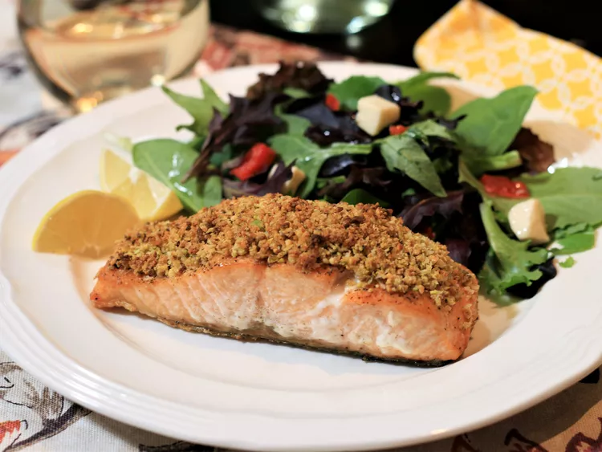

Pistachio-Crusted Salmon

Elevate Your Salmon: Quick and Delicious Pistachio-Crusted Recipe
Transform your ordinary salmon into an extraordinary dish with this pistachio-crusted salmon recipe. The flavorful crust elevates the salmon, making it perfect for both a quick weeknight meal and an elegant dinner party. With a preparation time of under 30 minutes, this dish is as convenient as it is delicious.
For a perfect pairing, serve this pistachio-crusted salmon with a chilled glass of Sauvignon Blanc. The crispness of the wine complements the rich, nutty flavors of the salmon, creating a delightful dining experience. Whether you're cooking for family or entertaining guests, this recipe is sure to impress.
Ingredients
- 1/4 cup crushed pistachios
- 2 tablespoons panko bread crumbs
- 1 tablespoon grated Parmesan cheese
- 1 tablespoon butter, melted
- 4 (6 ounce) fillets salmon with skin, center cut
- salt and ground black pepper to taste
- 2 tablespoons olive oil
- 1 tablespoon Dijon mustard
- 4 lemon wedges
Directions
- Preheat the oven to 375 degrees F (190 degrees C).
- Combine pistachios, bread crumbs, Parmesan cheese, and butter in a small bowl; stir with a fork until evenly combined.
- Lightly season salmon fillets with salt and pepper on both sides.
- Heat olive oil in a large oven-safe skillet over medium heat. Sear salmon fillets, flesh-side down, for 2 to 3 minutes. Turn heat off and flip salmon pieces over so skin side is down.
- Brush tops of salmon evenly with Dijon mustard. Top with pistachio mixture, pressing mixture down onto salmon.
- Bake in the preheated oven until salmon flakes easily with a fork, 10 to 12 minutes. Serve with lemon wedges.